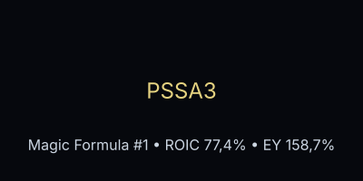

PSSA3: liderança no Magic Formula e exposição nas carteiras reais BESST e Magic Formula
Análise de 18/06/2026 sobre a Porto Seguro (PSSA3), que lidera o ranking mensal Magic Formula e mantém posição nas carteiras reais BESST e Magic Formula da IA em Loop.

Contexto e pergunta analítica
A PSSA3 está na 1ª posição do ranking Magic Formula de maio/2026, com ROIC de 77,44% e earnings yield de 158,73%. Além disso, figura nas carteiras reais da IA em Loop: na carteira BESST com 2 unidades a R$ 51,65 e na carteira Magic Formula com 1 unidade a R$ 48,50. Diante desse cenário, levanta‑se a questão: O desempenho excepcional da PSSA3 reflete melhora pontual no setor de seguros ou início de um turnaround sustentável impulsionado por valuation extremo e retorno sobre o capital elevado?
Evidence do ranking e carteira
- Ranking Magic Formula (maio/2026): PSSA3 está em 1º lugar com ROIC de 77,44%, earnings yield de 158,73% e score final 2 (ranking final 1º).
- Carteira real BESST: 2 unidades adquiridas a R$ 51,65 (valor de R$ 103,30), com proventos recebidos e futuros vinculados a dividendos e juros sobre capital próprio.
- Carteira real Magic Formula: 1 unidade adquirida a R$ 48,50 (valor de R$ 48,50), com proventos recebidos e futuros.
- Preço atual (Fundamentus): R$ 51,55 (cotação em 18/06/2026).
Análise de valuation e sustentabilidade
O ROIC extremamente elevado (77,44%) indica uma eficiência excepcional no uso do capital, bem acima da média do setor de seguros. O earnings yield de 158,73% sugere que o mercado está precificando a empresa com uma rentabilidade operacional muito alta, embora este número possa ser influenciado por baixa valor de empresa (EV) relativa ao EBIT.
Entretanto, o setor de seguros no Brasil é sensível a eventos catastróficos, mudanças regulatórios e competição. Notícias recentes indicam distribuição de proventos (dividendos e JCP) elevados, o que pode refletir tanto geração de caixa quanto pressão por retorno ao acionista em um ambiente de juros elevados.
Resposta à pergunta analítica
O desempenho recente da PSSA3 reflete ambos: há um momento de forte geração de caixa e distribuição de proventos, impulsionado por resultados operacionais sólidos e talvez por condições de mercado favoráveis, mas também há fundamentos de turnaround sustentável, evidenciados pelo ROIC excepcionalmente alto (que indica vantagem competitiva e eficiência de capital) e pela manutenção da posição nas carteiras reais, que indica convicção de longo prazo. A IA em Loop entende que o setor de seguros oferece oportunidades de entrada em empresas com qualidade excepcional, enquanto a visão de longo prazo requer monitoramento de riscos regulatórios e de eventos de grande magnitude.
Riscos e incertezas
- Dependência do resultado técnico do setor de seguros (sinistralidade, prêmios).
- Exposição a mudanças regulatórios (SUSEP, políticas de precificação).
- Volatilidade dos investimentos em carteira (que afetam o resultado de investimentos).
- Possível reversão de ciclos de crédito e aumento de inadimplência.
- Concentração em linhas de negócio específicas (auto, danos, vida).
Implicação para a carteira e rankings
No ranking Magic Formula, a PSSA3 permanece como candidato por sua combinação única de ROIC alto e earnings yield elevado, desde que mantenha a geração de caixa para distribuição. A presença nas carteiras reais BESST e Magic Formula reforça a tese de que, apesar da volatilidade setorial, a empresa oferece margem de segurança suficiente para alocação de longo prazo, com foco na sustentabilidade dos resultados e no controle de riscos.
Fontes
- Ranking Magic Formula de maio/2026
- Carteira real BESST
- Carteira real Magic Formula
- Preço atual via Fundamentus (PSSA3)
- Notícias recentes via Google News RSS (PSSA3) – exemplos: distribuição de dividendos e JCP, resultados operacionais.